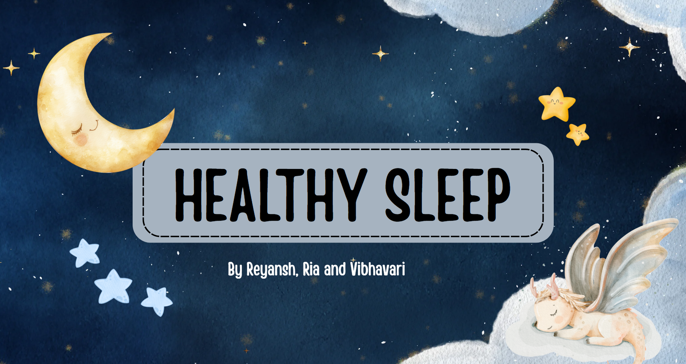

Group: Reyansh, Ria, Vibhavari
A community project is a project where individuals or groups take action to address a need or problem within their community. It involves identifying a problem, researching about it, taking action on it, and then reflecting upon actions done. Community projects often focus on making a positive impact on the community, eiher their lives, the environment or overall well-being.

Our idea for the community project is to create a presentation on Healthy Sleep and organize interactive activities to raise awareness about the importance of healthy sleep. We chose this topic because many students, teachers and families in our community often do not get enough sleep or are not aware about the importance of getting healthy sleep. Through our research and personal observations, we noticed that irregular sleep patterns, excessive screen time and busy routines are a common issue among teenagers. Therefore, we decided to spread awareness about why sleep is important and how it affects our daily life.